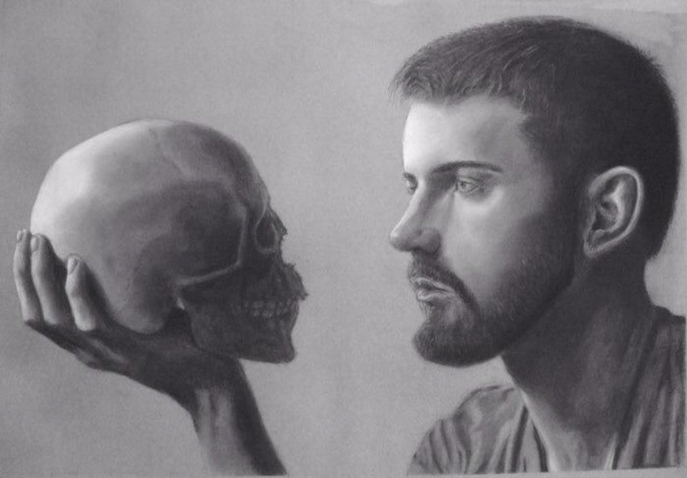

An oft-neglected but crucial part of the psychedelic renaissance, one psychotherapy is transforming our understanding of the mind & revolutionizing trauma treatment
By Cooper Tretter
Nicholas Blackston was nervous to take a synthetic drug like MDMA, or at least a part of him was. He sat on daybed in a therapy office, sporting a scruffy beard and a civilian outfit that belied his former military service. Up until then, Blackston had been self-medicating with cannabis and microdoses of psilocybin mushrooms. He had been struggling with intense, uncontrollable outbursts of rage after serving two deployments as a gunner in Iraq, which was where, among other traumatic events, a rocket-launcher lodged shrapnel into his legs and he “watched friends burn alive.” Back home, a part of him would lash out, and another part would know he needed to control it, but his self-medication regimen provided little relief from his outbursts. His anger, as anger does, began to slowly corrode his relationships with his friends, professors, and family. In 2010, at the end of his psychic rope, he decided to enroll in a clinical trial for MDMA-assisted therapy for PTSD.
In the preparatory session, before ingesting the pill, Blackston told the therapists—two of them in the room per the study’s protocol—“I feel like there’s a monster trying to come out of my chest and I’ve got my hands around its neck trying to strangle it.” In a traditional therapy office, some practitioners may have responded with a concern for schizophrenia or another schizoaffective disorder, but this statement didn’t seem to faze the therapists, Annie and Michael Mithoefer, a wife-and-husband, psychiatrist-therapist duo. “Umm…” Mithoefer pondered and then delivered more decidedly, in his characteristically compassionate way, “you may find, as we go along in this process, that it’s more a matter of getting to know this part of yourself and having a different relationship with it rather than having to strangle it or get rid of it.”
Mithoefer delivered his sentiment from a face framed by wispy gray hair and a spunky pair of bright blue glasses. The psychiatrist carries a kind, jolly demeanor that brings Mister Rogers to mind. Mithoefer has been working with Lykos, formerly the Multidisciplinary Association for Psychedelic Studies (or MAPS), since 2000. He was the study’s lead author and he wrote the protocol for MDMA-assisted psychotherapy. And his eyes, though elated, carry the impression of a person who has seen his own fair share of battles.
When Mithoefer told Blackston to shift his “relationship” with this “part” of himself, he was drawing on the idea that the human psyche is comprised of many component modules or sub-personalities, a mind more like a mosaic or a cathedral window than a single-paned soul. This psychological phenomenon is sometimes crisply abbreviated by its supporters as “the multiplicity of the mind.”
The idea has been spun up in a myriad of ways throughout human history—from the Buddhist position that the self is illusory and, a mind a mere a composite of conditioned patterns all firing at once—to the Greek idea the rage or sparks of genius were not internal to the body but came from gods or genies inhabiting the walls of the home (or maybe, more often, just passing through). Further along in the evolution of phrenetic fracturing, Freud divided the psyche into the id, ego, and superego. And Jung had his shadow, the unconscious aspects of personality that the conscious mind deems negative. More recently, the multiplicity of the mind has emerged as a central tenant in Western psychotherapy–namely, in Gestalt therapies and Internal Family Systems (IFS), modalities where a patient might be asked to role-play interacting with different parts of themselves. For example, in the “two-chair” technique, a patient might have a conversation with their inner child sitting in a chair across from them. That is, they might have a conversation with themself. One forthcoming study from Michigan found that IFS—and with it, multiplicity—has secured its foothold as among the most popular modalities, next to somatic therapies, in the therapeutic trainings listed by psychedelic practitioners.
But over the past few years, IFS and the broader idea of multiplicity have come under increasing scrutiny—both from mental-health professionals and cultural commentators—raising questions about its scientific basis, ethical risk, and its use in popular culture. While early trials and qualitative reports are promising, critics argue that IFS has not yet amassed a large-scale, rigorous evidence base comparable to established therapies like CBT or DBT. Others point to cases where IFS has harmed some patients, who in the process of identifying their ‘parts’ experienced schizophrenic symptoms like hearing voices. Some allege that the modality’s marketing—or “IFS evangelism” as critics call it—has outpaced science.
As the drug came on, his thoughts sped up. His heart lurched. Beneath his eyeshades, Blackston saw through the darkness the contours of the monster he described to the Mithoefers, staring him down from the dark corner of a cage. He moved toward the monster, and as Blackston approached, it lunged forward.
He made out more features of the monster then, once it was in the light. It tugged at chains on its wrists and wore the same shrapnel-torn cammies Blackston wore in Iraq. Its eyes glowed red and it grimaced at Blackston with what he called a demonic face. He had sequestered this part of him for two years, and the time had come for him to meet it.
The story of IFS began just a couple of years before what then seemed to be the end of legal MDMA, when the DEA placed an emergency ban on MDMA in 1985 and ended its use, both as a therapeutic tool and as the eighties rave-era party drug commonly known as ecstasy or molly.
In the early eighties, Schwartz, a research psychologist and family therapist, hadn’t tried molly and wouldn’t have had brain scans that showed the drug’s effect on the amygdala. His main focus was his clients. He was discouraged to find that even when he followed the family therapy protocol he learned in grad school, his patients—mostly bulimia patients at the time—were still binging and purging. But he began to notice something unexpected.
As Schwartz continued to listen to his patients, he heard them talk about different “parts” of themselves. “I was fortunate to work with that population. I think for kids with eating disorders, their parts stand out with bold relief. They’re really aware of their inner critics in particular,” Schwartz said in an interview. Stephanie (name changed for privacy), the first patient to spark the theory of IFS, spoke about a critic that brutally insulted her. “As a family therapist, a systems thinker, I’m not just interested in the critic, but I’m also interested in what else happens when the critic is there,” Schwartz said, “so I started asking those kinds of questions.” He quickly discovered that there were other parts contributing to Stephanie’s pain. She told Schwartz how the critic part triggered a part that made her feel very worthless—empty and alone. To cover up those terrible, uncomfortable emotions, the binging part would enter as a distraction. And then the critic attacked her for the binge. “She was caught in a vicious cycle,” said Schwartz.
Nonetheless, Stephanie’s description of competing interests or voices concerned Schwartz. His “first reaction was, ‘Oh, maybe she’s sicker than I thought. Maybe she has Multiple Personality Disorder.’ At the time, that’s what it was called.”
The stigma surrounding the disorder, now called Dissociative Identity Disorder (DID), still persists today, alongside other disorders where multiplicity is pronounced, like schizophrenia, where patients often hear different voices. While all individuals are able to dissociate or suppress emotions to some extent, dissociation is accentuated in trauma survivors, and DID represents the most extreme cases of dissociation. There’s a limited population of therapists either trained or willing to treat these more extreme trauma-based disorders, and some clinicians denied the existence of DID entirely, claiming patients were faking it. That some clinicians didn’t acknowledge the disorder meant that years of patients seeking help couldn’t find it. Some patients were met by dispassionate “professionals,” who would accept the patients’ money and roll their eyes when the patient left the therapy room. Sometimes, patients were dismissed entirely.
That was until the 2015 brain scan of a woman with DID in Germany who described some “alters” (common parlance for DID sub-personalities) that were blind. When those alters were in control, she couldn’t see. The brain scans confirmed the woman’s claim: The area of the brain responsible for vision went completely offline—no activity at all. Pretty hard to fake.
However, DID alters don’t interact with one another and rarely share certain memories or beliefs between themselves, so that clearly wasn’t what Stephanie was dealing with. What’s more, Schwartz started noticing and working with parts in other patients, and even noticed them in himself: “I started noticing that I've got them, too—that actually, these weren't just my thoughts and emotions. If I really focused on them, they would manifest as characters, the way that they did in my clients.”
Just as much a scientist as he was a family therapist, Schwartz had a hypothesis that he wanted to test: The parts could interact with each other (something previous models hadn’t proposed), and their relationships could change and evolve.
He found that patients who recognized the good intentions of the part that binged could rework their relationship with it. That part just wanted to distract them from some other part whose emotions were too overwhelming. In the IFS session, Schwartz would ask the part that binged to “step out of the room for a moment,” and allow them to chat with the exiled emotions. Stephanie’s exiled part felt worthless and alone, but as she and Schwartz learned to recognize this, she could better understand and tend to those emotions by giving that part company when it felt lonely, or validating it when it was insecure about its worth.
***
Reworking a relationship with a part is exactly what Blackston did when he met the part he had exiled by caging and chaining it deep in his psyche. Fortunately, his therapist prepared him for this moment; Mithoefer warned him that he might need to rework his relationship with this part of himself, now staring him down with rage and struggling to be released.
He said to the monster, “I’m sorry for putting you here. If you want to tear me apart, I understand.”
Blackston recounts this portion of his journey with a constricted voice and tears in his eyes, evidencing the immense sympathy he now feels for this part of himself. The part responded, “I’m the reason that your brothers and your sisters survived through combat. I’m the reason that you're still alive today. I made you the man you are today.”
He stepped forward, opened the cage, and unshackled the creature. Its glowing eyes faded to normalcy. His torn cammies were restored. He looked at him now, but the part was no longer monstrous. A bright light appeared and they merged back into one. He took off his eyeshades and earmuffs. “It wasn’t a monster after all!” he told the Mitheofers in the session. “It was a warrior part of me!” Blackston said in an interview that the motif of his demons coming to the light and revealing themselves as angels has been consistent in his psychedelic journeys.
Mithoefer continued to explain the utility of IFS in MDMA: “And it's very kind of patient-led. Even though the therapists are there, they’re really trying to guide the patient to discover more deeply.”
The patient-led nature of IFS is lent by Schwartz’s concept of the Self. In the early days, before the marriage of IFS & MDMA-assisted therapies, Schwartz continued to ask parts to give their patients more room. When patients reported feeling no more parts were there, they told him they just felt like their “true self.”
By now, Mithoefer has guided hundreds of MDMA sessions for trauma and is more convinced than ever of the power of IFS in psychedelic-assisted psychotherapy. In Phase 2 of the FDA trials, he tracked (albeit with a non-validated scale) how frequently parts came up during the session—90% of the time. “And 68% of the time parts came up, they were brought up by the participants first. When the therapist brought it up, it wasn't just out of the blue; it was really because that's what they're already talking about.”
Schwartz said he was excited about psychedelics because, “It kind of opens a portal to the bigger wisdom that our planet desperately needs right now. You can download a lot of wisdom from psychedelic experiences.”
Blackston learned in his session that he couldn’t cut off a part of himself. “I realized that I needed that part of myself, and I was able to take the things I learned in the Marine Corps, the discipline, and facilitate it in my everyday life.”
He was enrolled in a drawing class at the time, and despite his love for art, he struggled with sitting still enough to capture detail in his drawings. “I went from doodling and making nothing to making photorealistic masterpieces. I gained access to this center where I could finally focus.” Blackston drew an image of himself holding a skull, echoing his MDMA trip. “I was sober as hell by the way,” Blackston quipped, “because I had to be. I had to take sobriety tests in order to participate in the study.”

Blackston created art full-time for the past ten years, but he recently transitioned from doing full-time artwork to being a psychedelic peer counselor for other veterans at the Sound Mind Institute in Philadelphia. “I feel like for years I’ve been only a participant, but now I can participate as a healer, myself.”
And despite the excitement for the medicines, Schwartz became short-spoken and frustrated—or maybe a part of him was frustrated—at the lack of attention to the therapeutic component in psychedelic reporting and research.
But Mithoefer explained that, at least for MAPS, the lack of research into the optimal therapeutic method for psychedelic therapy has just been a matter of money and time. “I had conversations with [MAPS’ founder and executive director] Rick Doblin about a study on MDMA-assisted IFS. And everybody thought that would be great, but we didn't have the capacity to do it, because MAPS is always operating on a shoestring as a nonprofit.” What’s more, it wouldn’t have helped MAPS in their current mission of approving MDMA for therapeutic use.
Schwartz’s sights are set on psychedelic stars. “I’m very excited about the psychedelic renaissance. My goal seems kind of grandiose, but I’d love for IFS to become a map to psychedelic territory.”
For Blackston, the IFS map proved particularly useful. McCourry noted the self-led nature of his healing experience. “It put things into perspective and reminded me of who I was, and where I wanted to go back to. Without that reminder, it was difficult knowing exactly what I even wanted to strive for. It was a valuable reminder.”
Blackston features his artwork on his private Instagram account. Referring back to meeting his warrior, he captioned one piece, with a nod to the non-pathologizing nature of IFS, “Transmutation Tip: Recall your demons by their angelic names and all of heaven and hell within you will fall into formation.”
Perhaps the third psychedelic wave, too, can learn from that wisdom. A part of the movement has always carried a zeal, the demonic side of which has been characterized by misuse or apathy to the psychotherapeutic aspect of healing. The time has come for the movement to meet its own neglected part, and call it by its angelic name: psychedelic-assisted psychotherapy (okay, maybe “angelic” is a stretch). It will not only transform the way psychedelics treat mental illness, but also the thousands of lives of people struggling every day.
For Blackston, it did. “It saved my life. I regained the hope and purpose that I needed.”